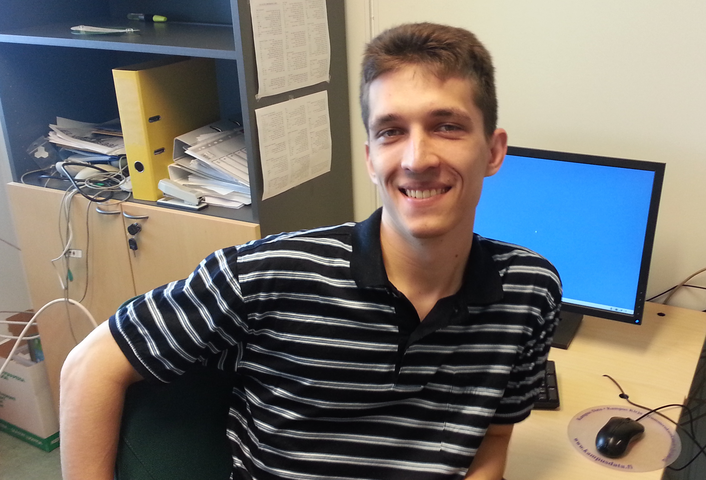

Marat Yuldashev

Now
Semrush.
Education
- First Ph.D. in Mathematics in Russia — Saint Petersburg State University, 2013
- Ph.D. in Computer Science — University of Jyväskylä, 2013. Sponsored by the scholarship of the President of Russia for studying abroad.
- Candidate of Science — Saint Petersburg State University, 2013
- Master of Computer Science — University of Jyväskylä, 2012
- Specialist degree — Saint Petersburg State University, 2011
Earlier
Docent, Saint Petersburg State University, Faculty of Mathematics and Mechanics, Department of Applied Cybernetics. Author of publications on nonlinear analysis of phase-locked loops and Costas loop circuits (Signal Processing, IEEE TCAS-II, IFAC), and co-holder of several related patents.